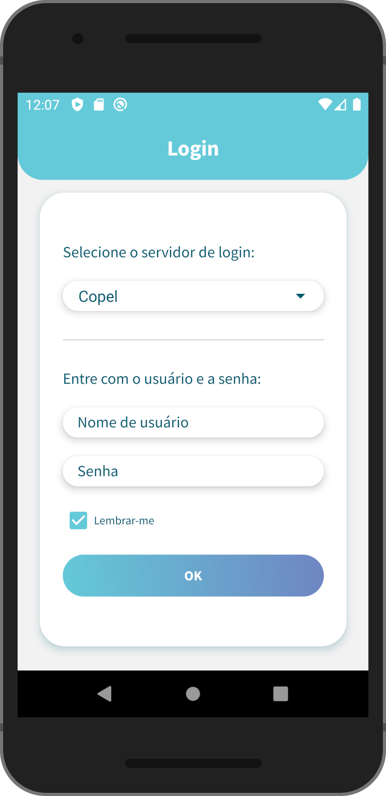
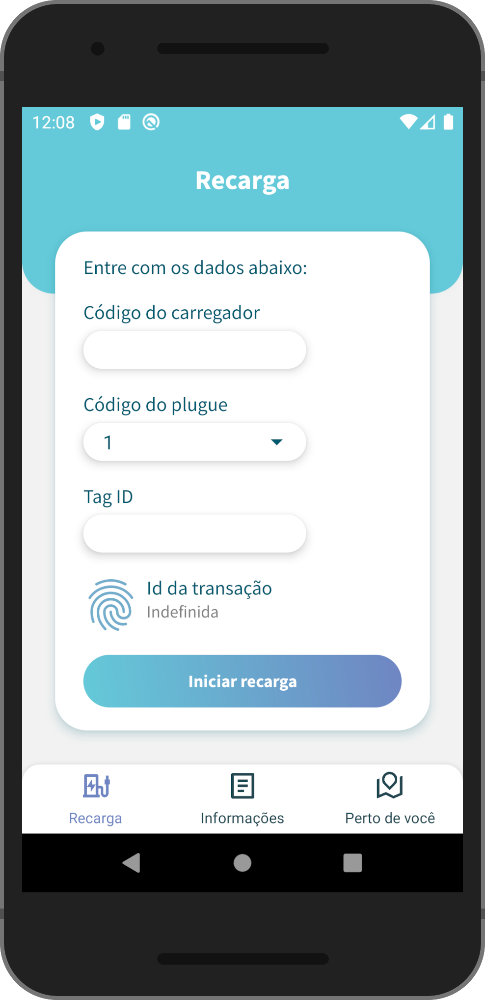
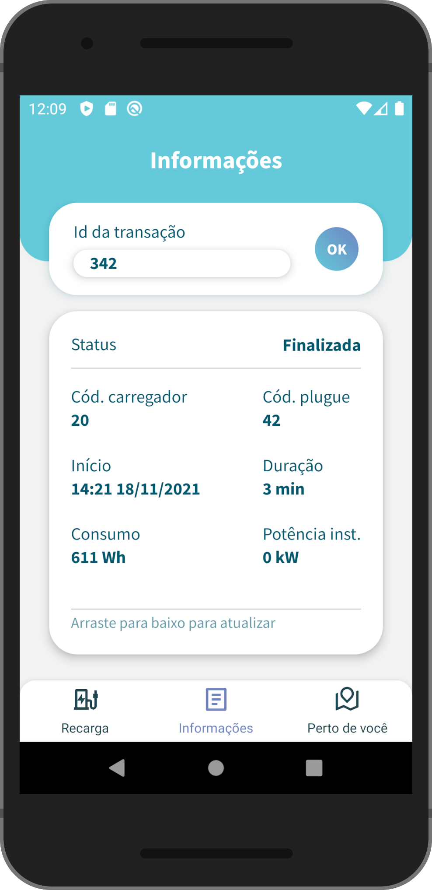
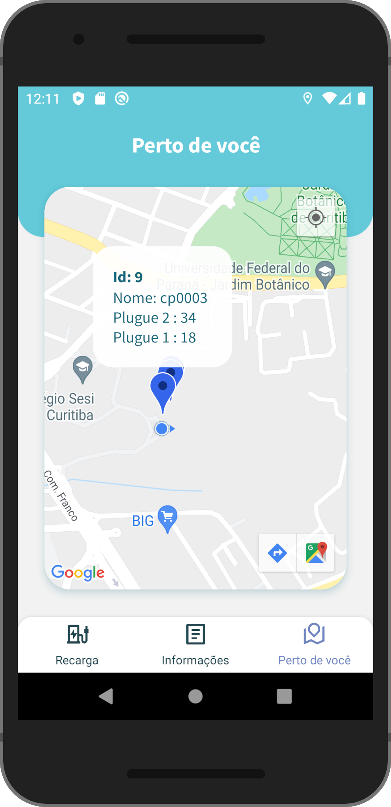
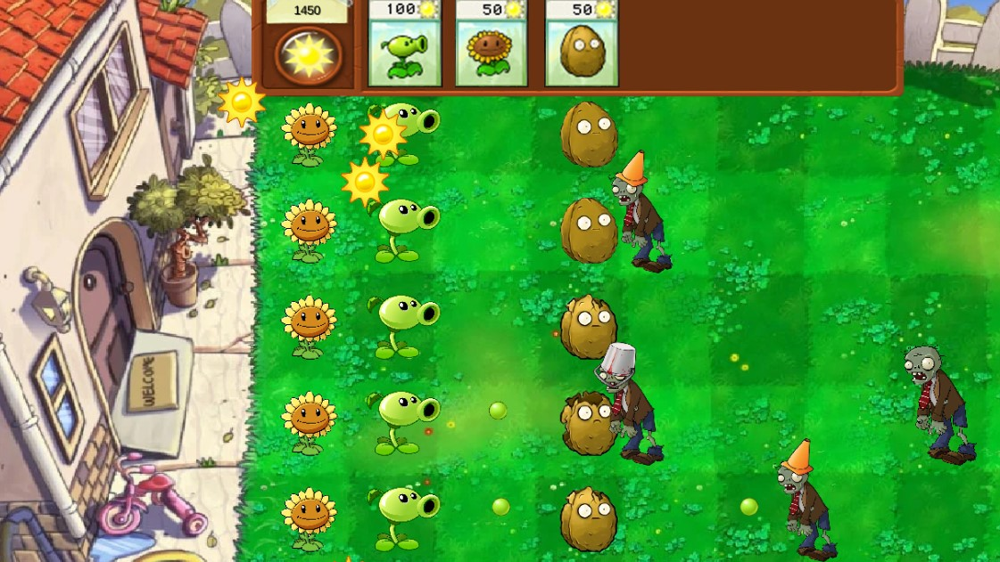
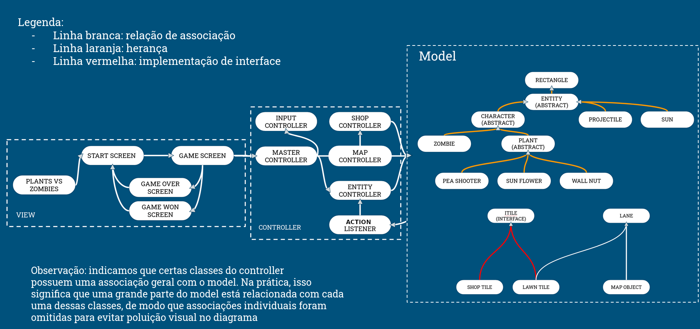

- Tenho 19 anos.
- Nasci e cresci em Curitiba. Desde 2021, estudo Engenharia de Computação na Universidade Estadual de Campinas (UNICAMP).
- Considero disciplina, criatividade e trabalho em equipe como meus pontos fortes.
- Tenho como principal objetivo profissional a excelência na criação de soluções por meio da tecnologia.
- Atualmente busco expandir a minha bagagem de conhecimentos e experiências nas áreas de Engenharia e Tecnologia da Informação.
Sobre
Portfólio
Abaixo encontram-se alguns projetos que tive o prazer de desenvolver.
Aplicativo mobile para controle de estações de carregamento de carros elétricos
Desenvolvi aplicativo voltado ao controle, localização e monitoramento de estações de carregamento de carros elétricos para o centro de pesquisa e desenvolvimento Lactec, durante estágio de verão realizado em Curitiba (Jan 2022 - Mar 2022). O projeto foi feito utilizando-se o framework React Native. Abaixo, seguem imagens e informações referentes às telas e funcionalidades do aplicativo.
Tela de login

- Tela inicial.
- Permite que apenas usuários autorizados possam acessar as demais funcionalidades do aplicativo.
- Pode-se escolher entre diferentes servidores para autenticar os dados de login.
- O botão "lembrar-me" salva os dados do usuário em armazenamento local, facilitando futuros logins.
Tela de recarga

- Permite que o usuário desbloqueie uma estação de carregamento e inicie uma recarga.
- Após preencher os dados da estação desejada e clicar no botão "iniciar recarga", o aplicativo faz uma requisição ao servidor da empresa. Se os dados estiverem corretos, a estação será desbloqueada.
- Assim que a estação for desbloqueada, o botão de iniciar recarga é substituído por outro com a função de interromper a recarga. Além disso, um valor é atribuído ao id da transação, identificando a atual recarga.
Tela de informações

- Com o id da transação, o usuário pode fazer uma consulta nos servidores da empresa a respeito de diversas informações de uma recarga - esteja ela finalizada ou não.
- O usuário tem a opção de atualizar em tempo real os dados da recarga analisada.
- Caso a recarga analisada esteja com status ativo, o usuário terá à sua disponibilidade um botão para finalizá-la.
Tela de mapa

- Integração ao Google Maps.
- Estações de carregamento em um raio de 5km do dispositivo serão identificadas no mapa com balões personalizados.
- As informações de uma estação podem ser obtidas ao clicar no seu respectivo balão. Esses mesmos dados podem ser utilizados para desbloquear a estação e iniciar uma recarga.
Recriação do jogo Plants Vs Zombies
Em dupla com colega, me propus a desenvolver uma versão própria do jogo Plants Vs Zombies - como projeto final da disciplina de Programação Orientada a Objetos, na Unicamp, durante o primeiro semestre de 2022. O jogo foi feito na linguagem Java com o framework LibGDX. Abaixo, seguem uma captura de tela do jogo mostrando a interface gráfica implementada e um diagrama da arquitetura do projeto.
Captura de tela do jogo durante uma partida

Diagrama geral da arquitetura do projeto

Visualização do processo de treino de um classificador com regressão logística
Fiz este projeto durante as férias de verão de 2021-2022 com o objetivo de melhor visualizar e entender o funcionamento do processo de treino de um classificador binário baseado em regressão logística. O projeto foi feito em Python, com o auxílio das bibliotecas Matplotlib, Numpy e Celluloid.
Gif mostrando o treino do classificador com base em dados bidimensionais

Gif mostrando o treino do classificador com base em dados unidimensionais

Classificador de reviews de compradores do Ebay
Fiz esse projeto após ter participado de uma sequência de oficinas promovidas pelo grupo Iris Data Science Unicamp, nos temas de Ciência de Dados e Aprendizado de Máquina. O projeto final foi apresentado aos demais membros em evento no final do primeiro semestre de 2021.
Rede Neural sem o uso de bibliotecas de Deep Learning
Esse projeto é o código final que produzi durante e após ter participado de oficinas do grupo estudantil Iris Data Science Unicamp voltadas a explicar os princípios básicos de uma Rede Neural.
Site de Portfólio
Após ter estudado HTML, CSS e Javascript durante as férias de inverno de 2022, busquei criar o presente portfólio - partindo do 0 - para testar e reforçar meus conhecimentos. O design utilizado foi uma mistura das minhas ideias com inspirações obtidas na internet. Observação: Assim como nos demais projetos, todo o código é de minha autoria. As inspirações citadas foram apenas visuais.